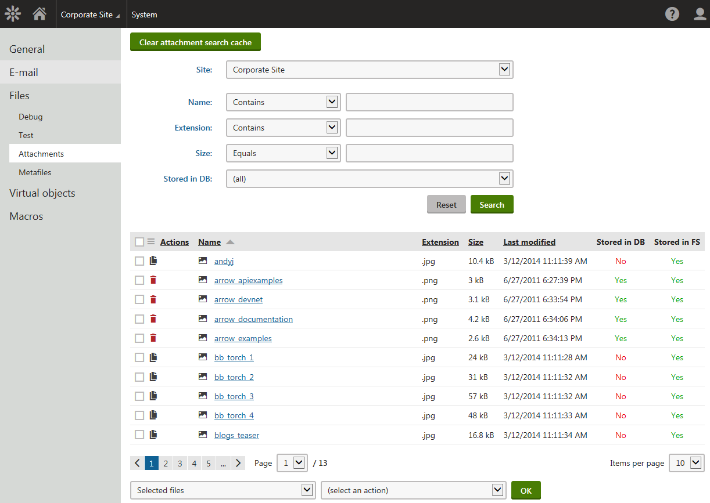
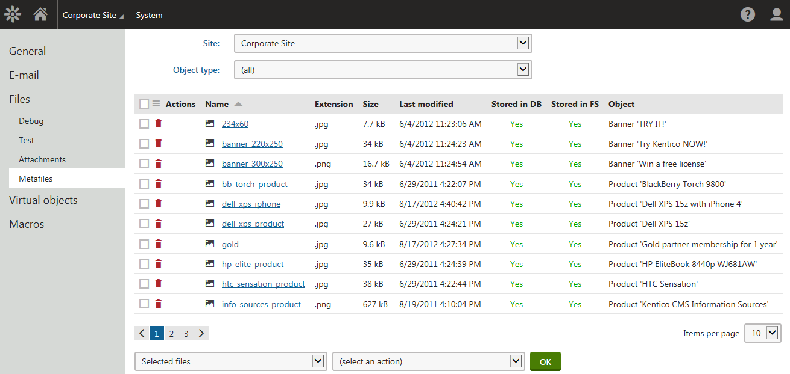

Administering files globally
A user interface for global-level administration of files stored by the system is located in the System application on the Files tab. This part of the user interface is divided into tabs described in the following text.
Test tab
On the Test tab, you can perform a test that verifies the system's access to the file system. The test consists of the following steps:
Creation of a testing folder and file
Modification of the testing file
Deletion of the testing folder and file
Click Test files to perform the test.
Attachments tab
On the Attachments tab, you can find a list of page attachments stored by the system. Based on selection in the Site drop-down list, you can either select a site and view all page attachments on the site, or choose (all) to view all page attachments on all websites in the system.
If there are 25 or more page attachments (or a different number set by means of the CMSDefaultListingFilterLimit web.config key), a filter is displayed above the grid. Using the filter, you can filter displayed attachments by their name, extension, size or depending on if they are stored in the database.
Depending on the values of the Store files in setting in Settings -> System -> Files, the system allows you to perform different page attachments management actions.
Use the two drop-down lists below the grid. In the first drop-down list, you can select:
Selected files – performs the action for files selected using the check-boxes in the grid.
All files – performs the action for all listed files.
Then you can select the required action from the second drop-down list and click OK.
Copy to database – copies the attachment to the database. This action is only displayed if the attachment is stored only in the file system while settings are configured for files to be stored both in the file system and in the database.
Delete from database – deletes the attachment from the database. This action is only displayed if the attachment is stored both in the file system and in the database while settings are configured for files to be stored only in the file system or to be stored both in the file system and in the database.
Copy to file system – copies the attachment to the file system. This action is only displayed if the attachment is stored only in the database while settings are configured for files to be stored only in the file system or both in the file system and in the database.
Delete from file system – deletes the attachment from the file system. This action is only displayed if the attachment is stored both in the file system and in the database while settings are configured for files to be stored only in the database.

Administering files - managing page attachments
Clearing the attachment search content
The Kentico attachment search feature allows users to search the text of attachment files along with the content of pages. The application stores the text extracted from page attachments in the database. When rebuilding page indexes, the search loads the "cached" attachment text from the database. The system only processes the file text directly for attachments that do not have any search content saved.
Click Clear attachment search cache in the header of the Attachments tab to remove the search content from the database for all attachments.
This allows you to rebuild your page indexes correctly in the following scenarios:
After you apply a hotfix or upgrade that changes how the search indexes attachment files
If you modify the functionality of a custom search text extractor
Metafiles tab
On the Metafiles tab, you can find a list of metafiles stored by the system. Based on selection in the Site drop-down list, you can select:
(all) – displays all metafiles stored by the system.
(global) – displays metafiles of global, i.e. not site-related objects.
<website> – displays metafiles of site-related objects belonging to the selected site.
Using the Object type drop-down list, you can further limit which metafiles will be displayed. By selecting (all), you get all metafiles that match the selection in the drop-down list above. The other options in the drop-down are particular object types, while choosing one displays only metafiles of these objects that match the selection in the drop-down list above.
If there are 25 or more metafiles (or a different number set by means of the CMSDefaultListingFilterLimit web.config key), a filter is displayed above the grid. Using the filter, you can filter displayed metafiles by their name, extension, size or depending on if they are stored in the database.
In the Actions column in the grid, action icons are displayed depending on the Store files in file system and Store files in database settings in Settings -> System -> Files. The displayed actions are the following.
Depending on the values of the Store files in setting in Settings -> System -> Files, the system allows you to perform different metafiles management actions:
Use the two drop-down lists below the grid. In the first drop-down list, you can select:
Selected files – performs the action for files selected using the check-boxes in the grid.
All files – performs the action for all listed files.
Then you can select the required action from the second drop-down list and click OK.
Copy to database – copies the metafile to the database. This action is only displayed if the metafile is stored only in the file system while settings are configured for files to be stored both in the file system and in the database.
Delete from database – deletes the metafile from the database. This action is only displayed if the metafile is stored both in the file system and in the database while settings are configured for files to be stored only in the file system or to be stored both in the file system and in the database.
Copy to file system – copies the metafile to the file system. This action is only displayed if the metafile is stored only in the database while settings are configured for files to be stored only in the file system or both in the file system and in the database.
Delete from file system – deletes the metafile from the file system. This action is only displayed if the metafile is stored both in the file system and in the database while settings are configured for files to be stored only in the database.

Administering files - managing metafiles